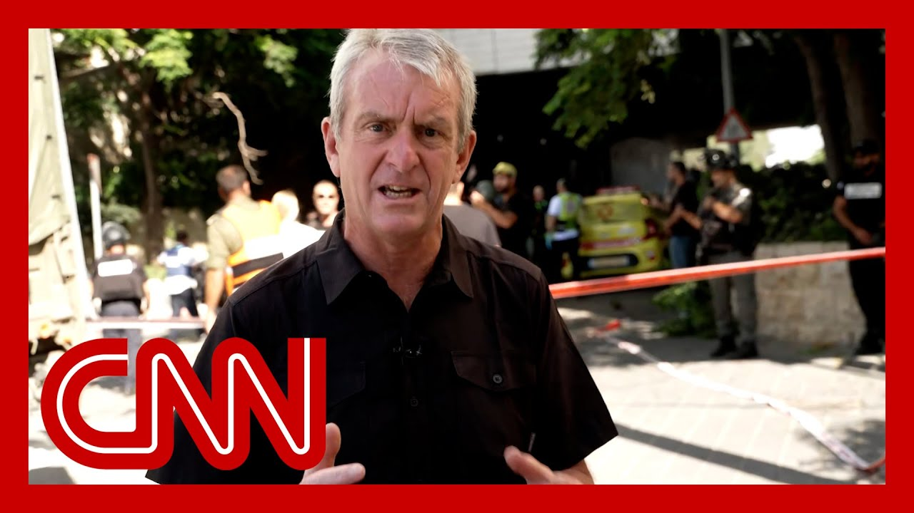

【伊朗军方称向以色列发射新一波导弹】
Summary: Missile strikes hit Haifa, causing casualties and significant emergency response efforts.
摘要： 导弹袭击海法，造成人员伤亡，引发大规模紧急救援行动。

⏱️ Estimated Reading Time: 17 min
📚 六级生词 📚 雅思生词 📚 托福生词 📚 专八生词 📚 SAT生词 📚 考研生词 📚 GRE生词 📚 高考生词
In the port city of Haifa.
在港口城市海法。
Missile strikes there that have made impact.
导弹袭击已造成影响。
I do believe that our Nic Robertson, who has been in Haifa, has reached the scene.
我相信我们一直在海法的尼克·罗伯逊已经抵达现场。
Nic, what do you see?
尼克，你看到了什么？
Yeah. signs of destruction here.
是的，这里有破坏的迹象。
It's not clear yet how much, sort of, damage to buildings there, as we do know from the local hospital that five casualties have been taken there, two of them in serious condition.
目前尚不清楚建筑物受损程度，但从当地医院得知，已有五名伤者被送往医院，其中两人伤势严重。
The location we're at without being specific, because Israel doesn't want to give away operational information, is a central location in this city.
我们所在的位置是城市的中心地带，但无法具体说明，因为以色列不希望泄露行动信息。
And what I can see behind me here are all sorts of emergency crews.
在我身后，我看到各种紧急救援队伍。
I've seen the paramedics and here I've seen the the ambulances racing away from the scene.
我看到了医护人员，也看到救护车从现场疾驰离开。
As we've walked in here, I've seen the police, controlling the streets around here.
我们走进来时，看到警察在控制周围的街道。
the military are are on the scene here as well, as well as the fire service.
军方和消防部门也已抵达现场。
And it's their hoses that I've been able to see spraying water underneath the bridge behind me in there.
我看到他们的水管正在我身后的桥下喷水。
it's not clear what they're dousing.
不清楚他们在扑灭什么。
What? Flames may have erupted, but just half an hour ago.
什么？可能有火焰燃起，但就在半小时前。
barely. Barely that.
几乎。几乎就在那时。
The sirens have gone off here in this town.
这座城市的警报已经响起。
We were out on the street.
我们当时在街上。
We just follow people to the nearest shelter.
我们只是跟着人们前往最近的避难所。
It was beneath, a shopping mall.
它位于一家购物中心的地下。
And while we were in that, it's very hard to tell what's happening.
我们在那里时，很难知道外面发生了什么。
But there were some dull thuds.
但听到了一些沉闷的爆炸声。
Then we got the all clear, and as soon as we came out, like everyone else, you start to understand what has happened around you.
然后警报解除，我们一出来，就像其他人一样，开始了解周围发生了什么。
And at least one missile, one Iranian missile, we're told, has impacted here.
我们被告知，至少有一枚伊朗导弹击中了这里。
The details at the moment are fragmentary.
目前细节尚不完整。
We can expect the casualty numbers to potentially change.
伤亡数字可能会发生变化。
We can expect the details about what we know about the impact here to change.
我们对袭击影响的了解可能会有所变化。
But at first glance, just coming down here, there are a lot of emergency services on site.
但乍一看，这里有很多紧急救援人员。
And, John, I got to tell you just earlier on this morning, I was in the hub of where this city deals with this type of emergency, the hub where all the key, players, the police, the fire service, all of them sit around a table with the mayor in a what they call a war room.
约翰，我得告诉你，今天早上早些时候，我在这个城市处理此类紧急情况的中心，所有关键人物——警察、消防部门等——与市长围坐在所谓的“战情室”里。
Information is feeding into them.
信息正源源不断地传给他们。
They filter that information.
他们筛选这些信息。
So the only information they get at that war room desk is key cleared.
因此，他们在战情室得到的信息都是经过筛选的关键信息。
Critical information for them to make decisions about what to do.
这些关键信息用于他们做出决策。
So I know right now that room is working at full speed with all their officials and their feeding and information about this deploying teams to the ground.
所以我知道，现在那个房间里的官员们正在全速工作，接收信息并部署救援队伍。
There'll be rescue teams involved here as well.
这里也会有救援队伍参与。
We may not have seen them yet, but they will be the ones dispatched to go in and check the buildings, check for people that are trapped, check for other people that are injured.
我们可能还没看到他们，但他们将被派去检查建筑物，寻找被困者和伤者。
It's a very, very coordinated effort.
这是一项非常协调的行动。
And it's what we're seeing here on the ground right now is precisely that effort playing out.
我们现在在地面上看到的正是这一行动的实施。
And that is the resilience that city officials talked to us about in this city.
这就是城市官员向我们提到的这座城市的韧性。
Nick, just earlier, you and I were speaking and it had been a quieter few hours, at least in height, but that obviously ended quickly with the impact of this strike.
尼克，就在不久前，我们还在交谈，过去几小时相对平静，至少在海法是这样，但这次袭击显然迅速打破了平静。
But Haifa has been hit very hard over the last week during these, during this back and forth here, the people in that city, what what is it been like for them?
但过去一周，海法在这场你来我往的冲突中遭受了严重打击，那里的居民情况如何？
You know, one of the other places I was in this morning, and I might have mentioned that to you, John was a church that they'd opened the car park underneath the church for, for anyone of any religion, to come in there, get shelter at times when the siren goes off and, you know, there were mattresses in there, there were people, clearly and sort of set up their home away from home down there.
今天早上我还去了另一个地方，可能跟你提过，约翰，那是一座教堂，他们开放了教堂下的停车场，供任何宗教信仰的人躲避警报。那里有床垫，人们显然在那里临时安家。
And the priest told me at nighttime, a lot of families come and live in there.
牧师告诉我，晚上有很多家庭来那里过夜。
And they do that because they are worried about these nighttime strikes.
他们这样做是因为担心夜间袭击。
So, again, this strike coming during the day is somewhat out of the normal.
因此，这次白天袭击有些反常。
When we were on the street before before the sirens or as the sirens went off, I literally saw a father, a mother with two young children taking them by the hand, running up the street, following other people to try to get to this, this place of shelter, this car park that we all underground car park that we all ended up in.
警报响起前或响起时，我们在街上，我亲眼看到一位父亲和一位母亲牵着两个孩子的手，沿街奔跑，跟着其他人试图到达这个避难所——那个地下停车场。
It eats into people's, you know, psyche, if you will.
这侵蚀着人们的心理。
It stresses on one lady I was talking to in that bomb shelter just now told me it was the first time she had gone into the shelter.
我刚才在防空洞里交谈的一位女士告诉我，这是她第一次进入避难所。
So Haifa has been targeted from the early days of this conflict.
因此，海法从冲突初期就成为目标。
Three people were killed, not far from here in the very, very beginning of the conflict.
冲突刚开始时，离这里不远的地方就有三人丧生。
So this city is very aware that it's in the crosshairs of Iranian missiles.
因此，这座城市非常清楚自己处于伊朗导弹的瞄准之下。
Last night was a bit of a respite, but I got to tell you, following on from our conversation earlier, John, about how it was quiet, it just shows me how everything here turns on a dime.
昨晚稍有喘息，但约翰，我得告诉你，从我们之前的谈话来看，这里的局势瞬息万变。
Things change very quickly.
情况变化非常快。
The response is fast, but all of that eats into people's it.
反应迅速，但这一切都在侵蚀人们的心理。
It amplifies their stress levels.
这加剧了他们的压力。
and as you can imagine, that's not good for anyone.
可想而知，这对谁都不好。
John. A lot of anxiety there, to be sure.
约翰，那里确实充满焦虑。
Nic Robertson at the scene of a missile strike in Haifa just a short time ago.
尼克·罗伯逊不久前在海法导弹袭击现场。
No sign of de-escalation as Iran fires a fresh barrage of missiles towards Israel just moments ago, with a strike reported in Haifa.
伊朗刚刚向以色列发射新一波导弹，海法报告遭袭，局势未见缓和迹象。
CNN is on the ground and both Israel and Iran.
CNN在以色列和伊朗均有现场报道。
Let's go first to CNN international diplomatic editor Nic Robertson, he said.
首先连线CNN国际外交编辑尼克·罗伯逊。
Haifa, Israel along the Mediterranean, Israel's third largest city.
海法，以色列地中海沿岸的第三大城市。
What can you tell us about this latest attack that.
关于这次最新袭击，你能告诉我们什么？
Yeah, Wolf, as far as we know so far, missile hitting the building behind me, in central Haifa.
沃尔夫，据我们目前所知，导弹击中了海法市中心我身后的大楼。
it what it does. Cause as far as we know, according to medical officials here, two serious casualties, two moderate casualties and 18 other people with minor injuries.
据这里的医疗官员称，已造成两人重伤，两人中度受伤，另有18人轻伤。
Several of those have already been taken to the main hospital here, which is, by the way, working. Working underground.
其中一些人已被送往这里的主要医院，顺便说一句，医院正在地下运作。
this missile came in here just a little over an hour ago.
这枚导弹大约一个多小时前击中这里。
What you're seeing behind me here, Wolf, is a situation of destruction.
沃尔夫，你在我身后看到的是破坏的场景。
And actually, Wolf, I'm being joined by the mayor of this city.
实际上，沃尔夫，我现在和这座城市的市长在一起。
You have been here for almost 20 years.
你在这里已经近20年。
Tell me what has just happened.
告诉我刚刚发生了什么。
What are you seeing? What are you learning?
你看到了什么？了解到了什么？
The Iranians have decided to make Haifa a target.
伊朗人决定将海法作为目标。
And is. I see the they succeed and succeed to choose very important targets.
而且我看到他们成功选择了非常重要的目标。
This is a down. This is a center of the downtown.
这是市中心。
I revived the downtown and turned it to be a commercial site.
我振兴了市中心，将其变成了商业区。
And how many casualties here?
这里有多少伤亡？
11人伤亡。
And. Well, moved to the hospital to Rambam.
已被送往兰巴姆医院。
And since gold, nobody got killed.
截至目前，无人死亡。
And you, you're normally in the war room.
你通常待在战情室。
You're normally sitting at the head of the table working on getting all the different teams in here.
你通常坐在桌首，协调各支队伍。
Tell me what we're looking at because I see police, I see medics, I see rescue, recovery.
告诉我我们眼前的情况，因为我看到了警察、医护人员、救援和恢复人员。
Explain to me what we're looking at here right now.
请解释一下我们现在看到的情况。
You see everybody who has to do his job in the area he's in charge of.
你看到每个人都在负责自己的领域。
And since going there, immediately turning down and coming here, and this is Israel under prayer, the priority is get the search teams in.
一旦警报响起，他们立即行动，以色列的优先事项是派出搜救队伍。
I've seen the search and rescue dogs, the drones, they go place to place to see if somebody is not there got stuck.
我看到了搜救犬和无人机，他们逐处检查是否有人被困。
The people who died in reformat in former places like this, they got stuck.
以前类似事件中有人因被困而丧生。
You want to make sure there's no one trapped?
你想确保没有人被困吗？
Was there anyone stuck in there?
有人被困在里面吗？
No. No. Up to now?
没有。到目前为止没有。
No, you you just told me.
不，你刚刚告诉我。
Hey, you revived this part of a city.
嘿，你振兴了城市的这一部分。
You've been here for 20 years.
你在这里已经20年。
How do you feel personally when you see it being your work, your way for the city?
当你看到自己的心血和城市的发展遭受破坏时，你个人感受如何？
This happening? Look, I don't like wars I've been to in ten wars.
发生这种事？听着，我不喜欢战争，我经历过十场战争。
This is not the name of the game.
这不是游戏的名称。
The name of the game is peace.
游戏的名称是和平。
And we have a lot to help us.
我们有很多可以帮助我们的人。
Others. And we should do it.
我们应该这样做。
You know them.
你认识他们。
The most important universities are situated in Haifa.
最重要的大学位于海法。
It is a mixed city, and it gets on for the most part.
这是一座多元化的城市，大部分时间相处融洽。
It's the only makes city in the world which is exercising for more than 100 years for peace between Jews and Arabs.
这是世界上唯一一个为犹太人和阿拉伯人之间的和平努力了100多年的城市。
So let me ask you this question.
那么让我问你这个问题。
Then. There's diplomacy going on in Geneva right now with the Iranian Foreign ministry, some European foreign ministers.
日内瓦正在与伊朗外交部和一些欧洲外长进行外交活动。
President Trump right now has said he's going to wait two weeks before he makes a decision what to happen next.
特朗普总统表示，他将等待两周再决定下一步行动。
What what are you hoping for from these different diplomatic pieces?
你希望从这些外交活动中得到什么？
Peace that the peace treaty will come out of.
希望和平条约能够达成。
And President Trump waiting two weeks to make a decision.
特朗普总统等待两周再做决定。
What do you think about that?
你怎么看？
It's too much.
太久了。
Why? Because we have no time.
为什么？因为我们没有时间。
You see what's going in the middle time.
你看到在此期间发生了什么。
What? What? That there's more destruction.
什么？更多的破坏。
They have to sit now and negotiate and design a treaty.
他们必须现在坐下来谈判并制定条约。
It's not a big deal.
这不是什么大事。
And do it in your understanding.
按照你的理解去做。
It's President Trump's analysis of what's going on is giving time for diplomacy.
特朗普总统对局势的分析是为外交争取时间。
It appears. Are you happy with with what you hear from him?
看起来是这样。你对他所说的话满意吗？
Because one day it seems to be his leading towards the military action.
因为有时他似乎倾向于军事行动。
Another day seems to be leaning towards diplomacy.
有时又倾向于外交。
What what's your sense?
你的感觉是什么？
A fixed answer I can't get from Trump.
我无法从特朗普那里得到明确的答案。
And this bothers me.
这让我困扰。
Why? Because I like stability and I think that he has to give me this stability.
为什么？因为我喜欢稳定，我认为他必须给我这种稳定。
You'll lead us here.
你将领导我们。
Don't want to push in one way or another in the country.
不想在国内推动某一方。
Talk to them while you interview me.
在你采访我的同时与他们交谈。
Like when you walk away from this.
就像你离开这里时。
Now what's what's next?
接下来会怎样？
How do you how do you how do you keep the city working and functioning?
你如何保持城市的运转？
Because I hear from your teams, you have a very clear, direct team in 24 hours.
因为我从你的团队听说，你们有一个非常明确、直接的24小时团队。
I want the city looking normal again.
我希望城市恢复正常。
You know. Why is that?
你知道为什么吗？
Because you can't live in the middle of a war.
因为你无法在战争中生活。
People don't like it.
人们不喜欢这样。
People are worried about their kids.
人们担心自己的孩子。
The income. No income in war.
收入。战争中没有收入。
You. I've seen photographs where there's been a bomb one night and repairs by the morning.
我看到过照片，前一天晚上遭炸弹袭击，第二天早上就修复了。
It's about raising me about the resilience.
这让我想起了韧性。
Where there was a bomb which destroyed the whole area.
有一次炸弹摧毁了整个区域。
And I stood there and I stood five hours.
我在那里站了五个小时。
And after five hours, it was totally repaired.
五小时后，完全修复了。
And people who came there got up in the morning and then took the car and moved over there.
早上起来的人们开车去了那里。
They didn't believe that there was a war there.
他们不相信那里发生过战争。